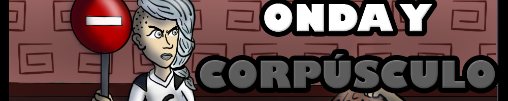

The game counts with puzzles of pushing objects and avoiding spikes and also different battles. It's ending features a boss fight.
This project was a submission for the GGJ22 (48 hours jam), participated as an artist. It was made on Godot and built for windows. The game can be played here Armagenews Itch.io
Onda y Corpusculo
Game Remarks
Onda and Corpusculo is a zelda-like videogame where player takes the role of Luz, a girl that has 2 different personalities, each other with her unique powers: Onda and Corpusculo. The goal is stopping his evil brother sorcery before it's too late.'The game counts with puzzles of pushing objects and avoiding spikes and also different battles. It's ending features a boss fight.
This project was a submission for the GGJ22 (48 hours jam), participated as an artist. It was made on Godot and built for windows. The game can be played here Armagenews Itch.io
Gameplay features and Screenshots
Main mechanics:- Personality change: Luz can change between Onda (who can read sings, perceive taps and moves faster) and Corpusculo (who can push objects and attack enemies) .
- Parry: If attacking at the right time, range attacks can be countered and sent back to enemies.